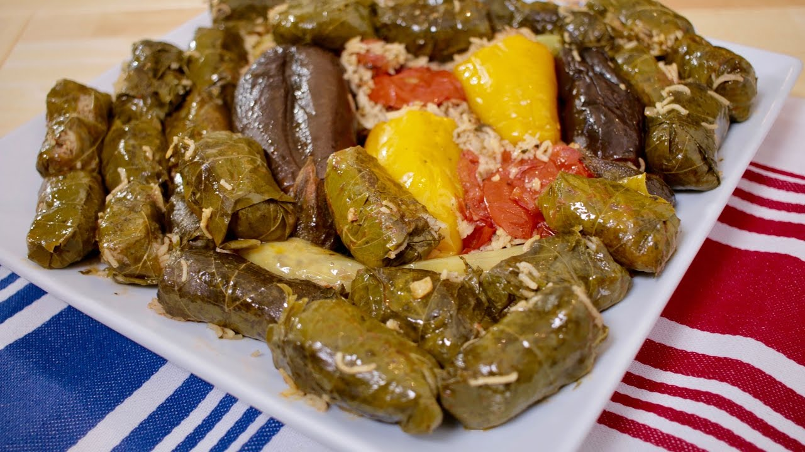

Dolma with Meat Recipe

Description
Assyrian dolma, also known as "dolma't" in the Assyrian language, is a
traditional dish with deep roots in Assyrian cuisine. This dish consists
of various vegetables, such as grape leaves, bell peppers, tomatoes,
zucchinis, and eggplants, stuffed with a flavorful mixture of rice, meat,
and aromatic herbs and spices. Dolma is a beloved dish across many Middle
Eastern and Mediterranean cultures, but the Assyrian variant has unique
elements that set it apart.
Assyrian dolma is a delicious and aromatic dish that embodies the rich
culinary heritage and traditional flavors of the Assyrian people, making
it a beloved staple in Assyrian homes around the world.
Ingredients
- 2 1/2 cups Basmati Long Grain Rice
- 500gms Beef Stir Fry
- 1 cup Fresh Parsley (chopped)
- 1 Onion (diced)
- 3 tablespoons Tomato Paste
- 1/4 cup Light Olive Oil
- 2 teaspoons Salt
- 1 teaspoon Black Pepper
- 1 tablespoon Chili Powder
- Jar Grape Vine Leaves
- 2 Zucchini's
- 4 small Tomatoes
- 2 Hot Peppers
- 1 large Onion
- 4 small Eggplants
- 4 small Capsicums
- 2 Beef Steaks for bottom of the pot
- 1/4 Cup Light Olive Oil
- 3 Tablespoons Tomato Paste
- 1 Teaspoon Citric Acid
- 1 Teaspoon Salt
- 4 Cups Boiling Water
Steps
- Soak the Rice in water for 1/2 an hour
- Soak vine leaves in warm water to remove the vinegar
-
Cut the caps off the tomatoes, eggplant & zucchini's, scoop the insides
of the tomatoes, dice and place in a bowl.
- Cut the caps off the peppers & capsicums and remove the seeds
- Cut the ends of the onion & remove the outer skin
-
Core & remove the middle , cut half way (not all the way) and remove
each layer
- Dice the beef stir fry
- Heat the olive oil in a saucepan until hot
-
Place the diced beef, parsley, hot oil, chilli powder, salt, black
pepper, tomato paste, diced onion, diced vegetables in the rice and mix
together
-
Season the beef steaks with salt & pepper, add some oil & rub all
together
- Sear on high heat on both sides
- Place the steaks at the bottom of the pot
- Place a spoonfuls of the mixture on a vine leaf and close
- Place a spoonfuls of the mixture in the vegetables and close
- Place all the vine leaves and vegetables in a pot
- Mix all the juice ingredients together and pour on the dolma
- Place a plate on top and push down
- Cover & cook low heat for 1 hour.